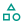

<div class="sidebar">
	<!-- Logo -->
	<h1 class="text-xs font-poppins-medium">MENÚ</h1>

	<!-- Enlaces del sidebar -->
	<nav class="pt-4">
		<ul class="flex flex-col">
			<a routerLink="/dashboard/summary" routerLinkActive="active" class="option">
				
				
				
				Analíticas
			</a>

			<a routerLink="/dashboard/gathering-centers" routerLinkActive="active" class="option">
				
				
				
				Centros de acopio</a>
			<a routerLink="/dashboard/users" routerLinkActive="active" class="option">
				
				
				Usuarios</a>
			<a routerLink="/dashboard/clasification" routerLinkActive="active" class="option">
				
				
				Clasificar</a>

			<a routerLink="/dashboard/separation" routerLinkActive="active" class="option">
				
				
				Separar</a>

			<a routerLink="/auth/sign-in" routerLinkActive="active" class="option" (click)="logout()">
				
				
				Cerrar sesi&oacute;n</a>
		</ul>
	</nav>
</div>